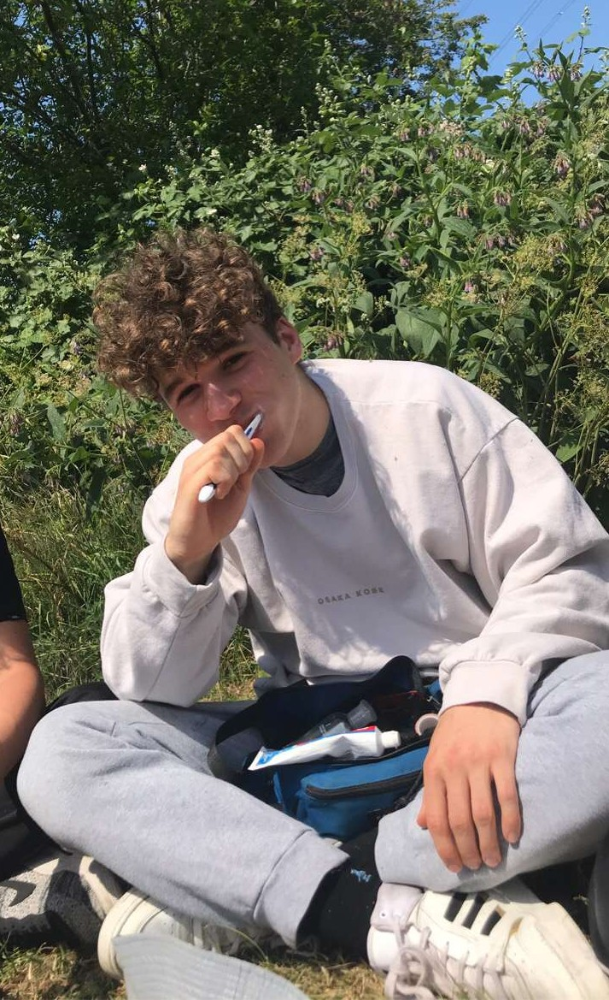
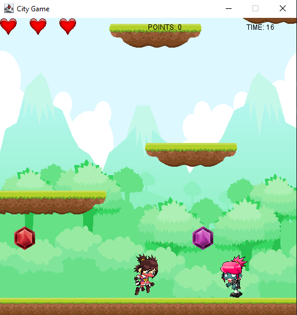
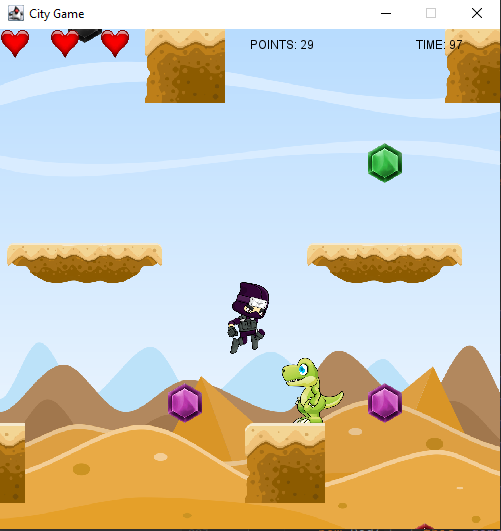
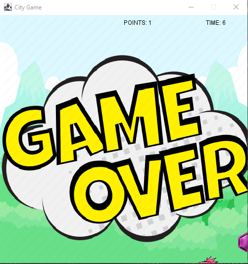

Joseph HonessMy coding experience is limited to gcse compsci. Im from Hackney, I like sport and games ... and that about it. |
 | |
|
|
||
Spring 2022: Ninja RunThis project came with its fair share of dificulties and compramises. It features a ninja in battle against zombies and dinosours in an arcade like platformer. See how many points you can get and reach the final check point to see if you made it into the top 3. Check out the code on Github: citygame2122-Joseph2000100 | ||
|    | ||